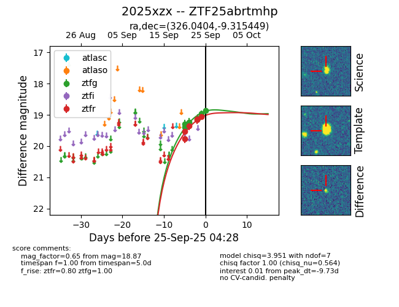
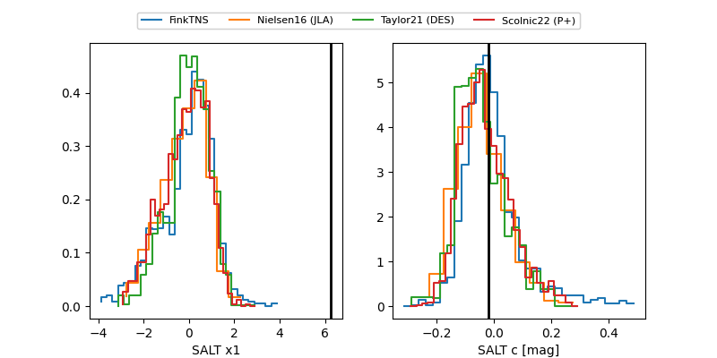

FINK: ZTF25abrtmhp
Lasair: ZTF25abrtmhp
ALeRCE: ZTF25abrtmhp
TNS: 2025xzx
YSE: 2025xzx
ZTF25abrtmhp (ztf,fink)
2025xzx (tns,yse)
equatorial (ra, dec) = (326.0404,-9.31545)
galactic (l, b) = (45.7600,-42.43874)


last ztfg=18.87, ztfr=19.05
6 ztfg, 6 ztfr detections